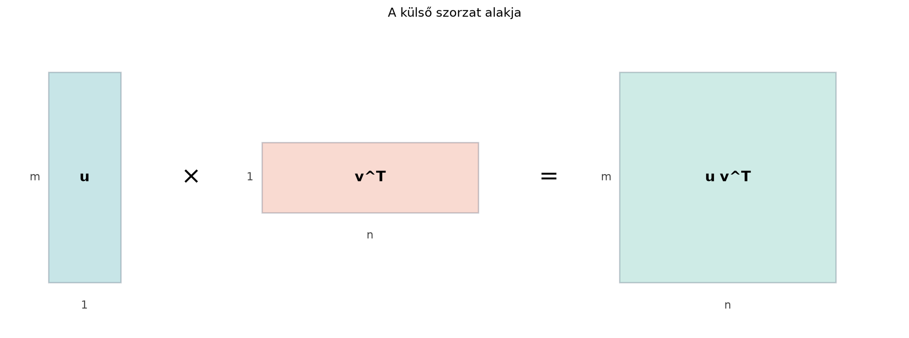

A 20.2. alfejezetben (Einstein-összegzés és az einsum) láttuk, hogy sok tenzorművelet egyetlen indexösszegzésbe sűríthető. Most két olyan szorzatot vizsgálunk, amelyek ezek mögött is ott állnak. Amikor egy dense réteg súlymátrixának gradiensét számítjuk, a válasz nem varázslat, hanem a batch mintáihoz tartozó külső szorzatok összege. Amikor nagy, blokkos szerkezetű mátrixokat akarunk tömören leírni, vagy egy optimalizáló módszerben a nagy görbületi mátrix inverzét hatékonyan kezelni, a Kronecker-szorzat a természetes eszköz. A külső szorzat ráadásul összeköti ezt az anyagot a 15.3. alfejezet (Alacsony rangú közelítés és képtömörítés) alfejezettel: a szinguláris érték felbontás éppen rang-1 külső szorzatok összegére bontja a mátrixot.
Legyen és . A belső szorzatuk
egyetlen skalár. A külső szorzat ezzel szemben minden lehetséges szorzatot egy mátrixba rendez:
A második sor az első sor fele, az első és a második oszlop aránya is ugyanaz: . A mátrix minden sora a sorvektor skalárszorosa, minden oszlopa pedig skalárszorosa. Ez a „vékony”, egyirányú szerkezet a rang-1 mátrixok jellemzője.

Definíció (külső szorzat, rang-1 mátrix). Legyen és két nullától különböző oszlopvektor. Ekkor a
mátrixot a két vektor külső szorzatának nevezzük. Azokat a mátrixokat, amelyek ilyen alakban írhatók, rang-1 mátrixoknak nevezzük.
A fenti , példában:
adódik. Az oszlopok mind skalárszorosai: az első oszlop , a második . Ezért az oszloptér az által kifeszített egyenes, tehát a mátrix rangja 1.
A külső szorzatban a tényezők sorrendje számít: felcserélve a transzponáltat kapjuk. Például
Állítás. Ha és nem nullvektor, akkor rangja 1.
Indoklás. A mátrix -edik oszlopa
Tehát minden oszlop skalárszorosa, így az oszloptér , ami egydimenziós. A rang az oszloptér dimenziója, tehát 1. Hasonlóan a sorok mind skalárszorosai.
Frobenius-norma. A külső szorzat elemeinek négyzetösszege
Ezt használjuk akkor, amikor egy SVD-tag nagyságát Frobenius-normában mérjük: az éppen , mert és egységvektorok.
A külső szorzat általánosítása a Kronecker-szorzat. Itt nem két vektort, hanem két mátrixot fésülünk egymásba.
Definíció (Kronecker-szorzat). Legyen és . Az Kronecker-szorzat az a blokkmátrix, amelynek -edik blokkja :
Például legyen
A blokkokat kiírva:
A külső szorzat ennek speciális esete: ha és , akkor
mert az -edik blokk , ami éppen az -edik sor.
A Kronecker-szorzat egyik legfontosabb azonossága a mátrixok oszlopfolytonos kiterítéséhez kapcsolódik.
Definíció (vec-operátor). Ha , akkor
Tehát az oszlopokat egymás alá írjuk. Például
Tétel (Kronecker-szorzat és mátrixszorzás). Ha , és , akkor
A méretek ellenőrzése: mérete , mérete , tehát a bal oldal hosszú. A jobb oldalon mérete , tehát után hosszú. Az azonosság alakilag rendben van.
Egyszerű példa. Legyen , , . Ekkor
tehát a bal oldal:
A jobb oldalon:
és ennek -je .
Ez a kézi példa azonban csak egyetlen skalárt (-es kimenetet) ad, ezért a C- és az F-sorrendű kiterítés ugyanazt az eredményt adná: a vec-azonosság sorrendjét nem tudja megkülönböztetni. Ezért a számítógépes ellenőrzésben egy -es -szel dolgozunk, amelynek négy hosszú kimenete van, és a rossz, C-sorrendű kiterítést is kiszámítjuk.
A külső szorzatot a NumPy-ban az np.outer vagy a
mátrixszorzás, a Kronecker-szorzatot az np.kron adja.
Egydimenziós NumPy-tömböknél a .T nem hoz
létre sor- vagy oszlopvektort: u.T ugyanaz az
-dimenziós
tömb marad, ezért u.T @ v és u @ v.T is
skaláris belső szorzatot ad, nem mátrixot. Külső szorzathoz
np.outer(u, v)-t vagy
u[:, None] @ v[None, :]-t kell használni. Explicit
és
alakú tömbökkel a .T szerepe külön bemutatható.
import numpy as np
u = np.array([2.0, 1.0])
v = np.array([1.0, 3.0])
w = np.array([1.0, 3.0, 4.0])
print("u.T @ v:", u.T @ v) # skalár
print("u és w alakja:", u.shape, w.shape)
print("np.outer(u, w) =\n", np.outer(u, w))
print("u[:,None] @ w[None,:] =\n", u[:, None] @ w[None, :])Várt kimenet:
u.T @ v: 5.0
u és w alakja: (2,) (3,)
np.outer(u, w) =
[[2. 6. 8.]
[1. 3. 4.]]
u[:,None] @ w[None,:] =
[[2. 6. 8.]
[1. 3. 4.]]A reshape alapértelmezett order='C'
(sorfolytonos), a matematikai vec definíció viszont
oszlopfolytonos, ezért a vec-azonosságnál explicit
order='F' argumentumot kell használni. A két sorrend
ugyanazon a mátrixon eltérő elemsort ad; a következő kód mindkettőt
kiszámítja.
import numpy as np
# Külső szorzat
u = np.array([[2], [1]]) # 2x1 oszlop
v = np.array([[1], [3]]) # 2x1 oszlop
print("u v^T =\n", u @ v.T)
# Kronecker-szorzat
A = np.array([[1, 2],
[0, 3]])
B = np.array([[10, 20],
[30, 40]])
print("A kron B =\n", np.kron(A, B))
# vec-azonosság: (A2 kron B2) vec(X) = vec(B2 X A2^T)
A2 = np.array([[1, 2],
[3, 4]]) # 2x2
B2 = np.array([[5, 6],
[7, 8]]) # 2x2
X = np.array([[1, 2],
[3, 4]]) # 2x2
lhs = np.kron(A2, B2) @ X.reshape(-1, order='F')
rhs = B2 @ X @ A2.T
print("lhs =", lhs)
print("rhs =", rhs.reshape(-1, order='F'))
print("egyezik?", np.allclose(lhs, rhs.reshape(-1, order='F')))
# A rossz, C-sorrendű kiterítés ellenőrzése
rhs_c = rhs.reshape(-1, order='C')
print("C-sorrendu rhs =", rhs_c)
print("C-sorrend egyezik?", np.allclose(lhs, rhs_c))Várható kimenet:
u v^T =
[[2 6]
[1 3]]
A kron B =
[[ 10 20 20 40]
[ 30 40 60 80]
[ 0 0 30 60]
[ 0 0 90 120]]
lhs = [ 91 123 205 277]
rhs = [ 91 123 205 277]
egyezik? True
C-sorrendu rhs = [ 91 205 123 277]
C-sorrend egyezik? FalseA négy hosszú kimeneten a C-sorrendű kiterítés
[91, 205, 123, 277]-t ad, ami nem egyezik a bal oldallal;
csak az F-sorrend adja vissza a [91, 123, 205, 277]
vektort. Ez a tényleges próba arra, hogy a reshape
sorrendje helyes-e, míg a fönti skaláris példa erre alkalmatlan.
A külső szorzat a neurális hálók visszaterjesztésében is konkrétan megjelenik. Tekintsünk egy dense réteget
alakban, ahol a batch és a súlymátrix. Ha a veszteség gradiense a preaktivációra nézve , akkor a súlymátrixra vonatkozó gradiens
ahol az -edik minta kimeneti gradiens-vektora, pedig az -edik bemeneti vektor. A gradiens tehát darab legfeljebb rang-1 mátrix összege, rangja legfeljebb . Ha a bemenetek vagy a gradiensek pontosan egy egyenesre esnek, akkor a súlygradiens egzaktul alacsony rangú (a külső szorzatok ugyanabba az irányba esnek). Ha csak közel kollineárisak, a gradiens nem egzaktul alacsony rangú, de alacsony ranggal jól közelíthető lehet; a kettőt nem szabad összekeverni. Ez az egyik megfigyelés az alacsony rangú adaptációk, például a 23.1. alfejezetben (LoRA: alacsony rangú adaptáció finomhangoláshoz) tárgyalt LoRA mögött.
A Kronecker-szorzat legismertebb MI-szereplője a Kronecker-faktorizált közelítés. A K-FAC módszer (Martens és Grosse, Optimizing Neural Networks with Kronecker-factored Approximate Curvature, 2015) egy réteg súlyaira vonatkozó nagy görbületi mátrixot
alakban közelíti, ahol a bemenetek, a kimeneti gradiensek külső szorzatainak átlagából (második momentumából) származik. Mivel invertálható és esetén , a nagy mátrix invertálása helyett két kisebb mátrix invertálásával dolgozhatunk.
.T nem
változtat az alakon, ezért u.T @ v és u @ v.T
is skalárt ad. Külső szorzathoz np.outer(u, v) vagy
u[:, None] @ v[None, :] kell; ez a shape-hibák egyik
leggyakoribb forrása.import numpy as np
A = np.arange(6).reshape(2, 3) # 2x3
B = np.arange(20).reshape(4, 5) # 4x5
K_AB = np.kron(A, B)
K_BA = np.kron(B, A)
print(K_AB.shape, K_BA.shape)
print(np.allclose(K_AB, K_BA))Várt kimenet:
(8, 15) (8, 15)
False(a) Fogalmi ellenőrző kérdés. Miért nevezzük az mátrixot (nemnulla és esetén) rang-1-nek? Milyen altereket feszítenek ki az oszlopai és a sorai?
(b) Kézi számolás. Legyen és . Számítsd ki -t és -t. Milyen kapcsolatban áll a két mátrix?
(c) NumPy-feladat. Ellenőrizd a külső szorzatot a (b) feladat , vektoraival, majd külön műveletként a Kronecker-szorzatot az , mátrixokkal. Add meg az eredményeket a Python alakkal együtt.
(d) Gondolkodtató feladat. Legyen
Számítsd ki a súlygradienst, írd fel mint külső szorzatösszeget, és állapítsd meg a gradiens rangját.
(a) Ha és nemnulla, akkor azért rang-1, mert minden oszlopa skalárszorosa, tehát az oszloptér , ami egydimenziós. A sorok mind skalárszorosai, tehát a sortér .
(b)
A két mátrix egymás transzponáltja:
(c) A Python-kód:
import numpy as np
u = np.array([[1], [2]])
v = np.array([[3], [4]])
A = np.array([[1, 2], [3, 4]])
B = np.array([[10, 20]])
print("u v^T =\n", u @ v.T)
print("A kron B =\n", np.kron(A, B))Várt kimenet:
u v^T =
[[3 4]
[6 8]]
A kron B =
[[10 20 20 40]
[30 60 40 80]](d) A gradiens:
A külső szorzatösszeg:
Az összegük
amelynek második sora az első kétszerese, ezért a rangja 1.
A külső szorzat minden lehetséges szorzatot mátrixba rendez; ha és nem nullvektor, az eredmény rang-1 mátrix. A Kronecker-szorzat két mátrixot blokkmátrixszá fésül össze: mérete . A vec-operátor segítségével a mátrixszorzás és a Kronecker-szorzat összekapcsolható:
A gépi tanulásban a dense réteg súlygradiense batch-beli külső szorzatok összege; a K-FAC optimalizáló pedig Kronecker-faktorizált közelítéssel gyorsítja a görbületi mátrix kezelését.
A K-FAC módszer nevét és alapötletét Martens, J. és Grosse, R. (2015): Optimizing Neural Networks with Kronecker-factored Approximate Curvature (ICML) alapján említem. A cikk számszerű eredményeit, benchmarkjait nem ellenőriztem. A többi matematikai tartalom klasszikus lineáris algebrai tudás, amelyet a könyv a megelőző alfejezetekre építve tárgyal.